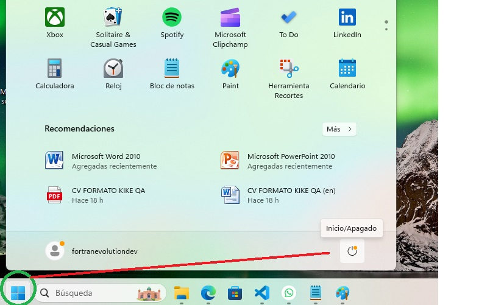

EL ORDENADOR
También llamado computadora, computador, terminal, equipo o simplemente compu. Es una herramienta que está presente cada vez más en nuestro entorno. Desafortunadamente, esa presencia ha dado lugar a la normalización de su existencia y a un cada vez mayor desconocimiento de su uso.
Las personas mayores por no estar familiarizados con ellos, y los más jóvenes por estarlo demasiado.
Si bien el uso de estas máquinas hoy en día dice ser bastante intuitivo, no lo es realmente para esas personas corrientes de cuarenta o cincuenta años que en 1980 se vieron de pronto invadidas por una cada vez mayor cantidad de aparatos enormes y pesados que hacían lo mismo que una calculadora de bolsillo y decidieron seguir usando lápiz y papel para sus registros.
Tampoco lo es para los jóvenes del 2020 a los que se les presentó esta herramienta como poco más que otra consola de juegos.
En fin, que un conocimieto más profundo de esta útil herramienta es importante en estos tiempos en los que casi todo está, de forma directa o indirecta, conectado con ellas.
Comencemos desde el principio: Qué es un ordenador.
No voy a aburrirlos con la historia de estos aparatos que comenzó realmente en el 500 antes de cristo (sí, hace unos 2500 años) en china (para variar). Pero sí les diré que es una máquina, no más que eso, una herramienta más que tiene teclas como un microondas y pantalla como un televisor. Seguramente muchos informáticos querrán destruirme por esto, pero mi intención es familiarizar a los menos conocidos en el área.
Una compu tiene dos partes fundamentales:
- Hardware
- Software
Comenzaremos por hablar del Hardware que vendría a ser la parte física y palpable, la que podemos manipular con las manos. Y este hardware puede tener tres partes identificables:
- Case o caja (se pronuncia keis)
- Componentes
- Periféricos
Case:
- Es el dispositivo principal, el "aparato" en sí, generalmente se presenta como una caja(vertical
 u horizontal) en la que van conectados, insertados y/o ensamblados los diversos periféricos y componentes que conforman el sistema.
u horizontal) en la que van conectados, insertados y/o ensamblados los diversos periféricos y componentes que conforman el sistema. - Generalmente tienen sólo tres botones:
- On/Off o encendido/apagado (es el mismo botón para las dos funciones) se pulsa una vez para encender el ordenador, luego para ser apagado de manera segura, ya que no estamos hablando de un electro-doméstico ordinario, deberá hacerse desde el sistema operativo. En algunas configuraciones, al presionar una vez el botón, este hará los procesos necesarios para el apagado. Dejar el botón presionado por algunos segundos hará un apagado "forzoso", terminando con todos los procesos. No se recomienda hacerlo a menos que sea necesario.
- reinicio o reset (para reiniciar la máquina). Resulta, que este tipo de equipos hace tras bambalinas una serie de procesos que la mayoría de nosotros no conoce (ni nos importa mucho, realmente). Es algo así como el latido del corazón, en el que no reparamos. Así que de igual manera, un reinicio seguro deberá hacerse desde el sistema operativo para evitar pérdidas de datos, a menos que sea estríctamente necesario. De hecho, en muchos ordenadores modernos, este botón brilla por su ausencia.
- corte de corriente (este está ubicado en la fuente de energía y corta de forma abrupta el suministro) Este en realidad es un suitch o interruptor, y su uso está restringido a casos de emergencia o en el que el ordenador vaya a ser dejado de usar por largos períodos de tiempo.
Practiquemos un poco:
El botón de reset sirve para...
Seleccione la respuesta correcta: